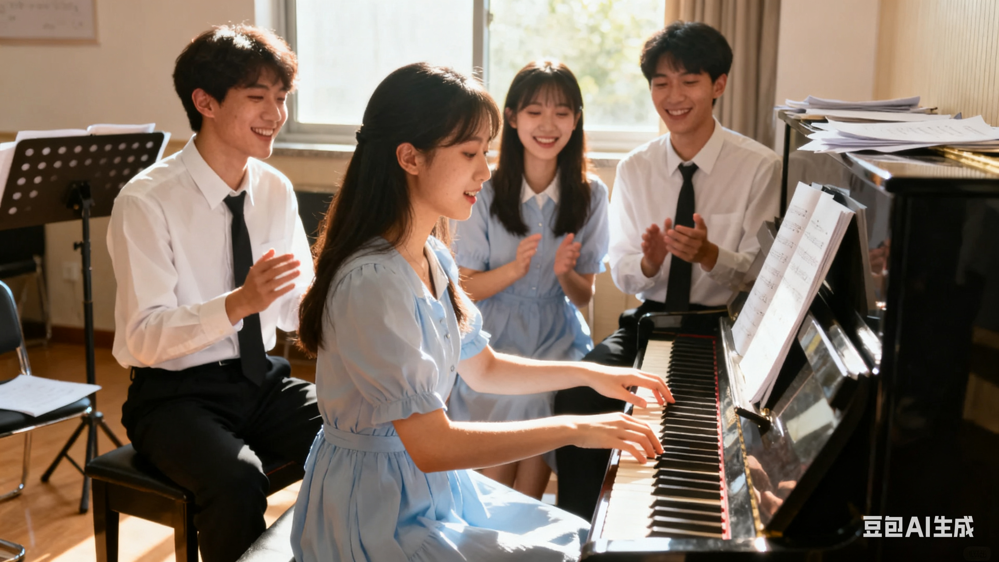

在充满人文气息的校园里，钢琴社团如同一颗璀璨的星辰，以 “传播钢琴文化、培育音乐素养、搭建交流平台、成就艺术梦想” 为核心宗旨，陪伴一届又一届热爱音乐的学子在黑白琴键间书写青春华章。自成立以来，社团始终坚守艺术教育的初心，打破 “钢琴学习小众化” 的局限，让高雅艺术走进更多学子的生活，成为校园文化建设中极具影响力的特色社团，先后荣获 “校级优秀社团”“校园文化建设示范团体” 等多项荣誉。 社团发展历经十余年沉淀，从创办初期几位师生自发组建的 “小团体”，成长为拥有完善组织架构的成熟社团：设理事会统筹全局，下设教学部、活动部、宣传部、后勤部四大职能部门，各部门分工明确、协同协作，保障社团高效运转。目前，社团注册成员 200 余人，既有功底扎实的 “钢琴达人”，也有零基础的 “音乐小白”—— 多元构成打破年龄与年级界限，让共同的音乐热爱成为连接彼此的纽带。 教学培育是社团核心竞争力，构建 “分层教学 + 个性化指导” 体系：针对零基础成员开设 “钢琴启蒙班”，从识谱、指法、节奏等基础内容入手，搭配趣味教学；为有基础成员设立 “技能提升班”，聚焦曲目处理与演奏技巧；为高水平成员组建 “精英演奏团”，邀请专业导师指导高难度曲目。此外，每月邀请高校教授、资深教师开展专题讲座，拓宽成员艺术视野。
为了让大家更好地了解钢琴社的日常，本学期计划安排如下几项主要活动。 具体时间可能会根据学校统一安排略作调整，详情请关注社团通知。
| 钢琴社 2025 年春季学期活动安排表 | |||
|---|---|---|---|
| 活动名称 | 活动时间 | 活动地点 | 负责人 |
| 新成员见面会 | 3 月第 2 周 周五晚 | 学生活动中心 音乐教室 201 | 张强 |
| 钢琴基础教学公开课 | 3 月第 3 周 周六下午 | 李娜 | |
| 校园草地音乐会 | 4 月第 2 周 周日 | 操场东侧草坪 | 王浩 |
| 期末专场音乐会 | 6 月第 1 周 周六晚 | 大学生活动中心 大礼堂 | 刘芳 |
上表仅列出了部分代表性活动，日常还会有小型即兴合奏、经验分享等活动， 欢迎有想法、有创意的同学参与策划。
下面是一张我们社团活动的相关照片。点击图片，可以查看更详细的活动介绍。

图中为上学期“夏日之声”校园音乐会上，社团成员的演奏场景。平时的训练与排练，都会在正式演出中得到充分的展示机会。
下面是一段我们社团在音乐会上的演奏视频
刚加入社团时，李雨桐连五线谱都认不全，因羡慕同学弹琴的样子加入社团。起初手指僵硬、节奏混乱，多次想放弃，但在教学部学姐的耐心指导和小组交流会成员的鼓励下，她每天坚持练习 1 小时，周末主动参加琴房开放日。后来通过钢琴 5 级，两个学期后加入 “技能提升班”，顺利通过 10 级考试，并在 2024 年省级钢琴比赛中获青年组铜奖。“社团像个温暖的家，不仅教会我弹琴，更让我学会坚持。” 李雨桐说，如今她常作为志愿者指导新成员，把这份热爱传递下去。
张浩然是社团 “精英演奏团” 成员，也是校外公益活动的 “常客”。2023 年重阳节，他带领 10 名社团成员走进敬老院，为老人们演奏《夕阳红》《茉莉花》等曲目，看到老人脸上的笑容，他萌生了 “用琴声传递温暖” 的想法。此后，他主动对接社区、福利院，组织开展 12 场公益音乐会，还发起 “琴声伴成长” 计划，为留守儿童提供免费钢琴启蒙课。“音乐不仅是技巧，更是情感的表达，能让他人快乐，就是我最大的收获。” 张浩然的故事被市级晚报报道，成为校园 “公益榜样”。
王梓轩和陈语然是同学，开始时同时加入社团，因都喜欢周杰伦的钢琴曲成为好友。平时他们一起练习、互相纠错，周末相约参加小组交流会，之后共同加入 “精英演奏团”，合作完成四手联弹《不能说的秘密》，在校园钢琴大赛中获一等奖。
如果你也喜欢音乐，期望在大学生活中拥有一段与钢琴相关的美好回忆， 欢迎加入我们，一起在琴键上演奏青春的旋律。
提交表单后，如需修改信息，可以再次填写并提交最新的一份。